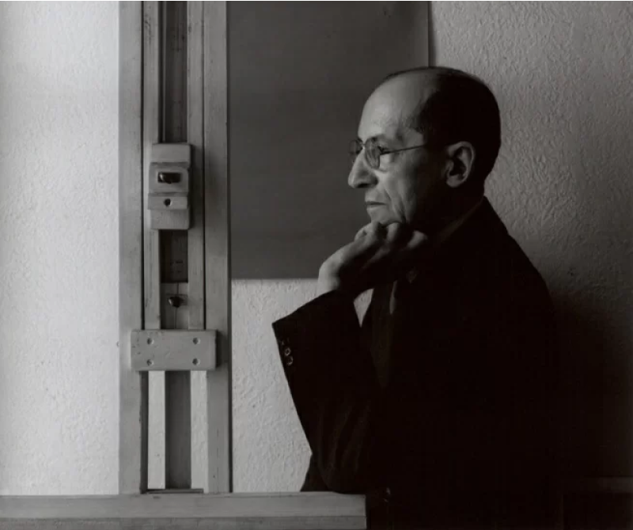

Sair
Cadeira Azul e Vermelho
Gerrit Rietveld. Red Blue Chair.1918-1923 | MoMa
R$ 3.299,00
Mondrian
Pieter Cornelis Mondrian, geralmente conhecido por Piet Mondrian, foi um pintor Holândes mordenista. Criou o movimento artístico neoplasticismo e colaborou com a revista De Stijll e depois com as formas de ointura concreta.
De Stijl (pronúncia [də ˈstɛɪl][1]), holandês para “o estilo”, foi um grupo de pintores, arquitetos e designers holandeses que fundaram uma associação de artistas e um jornal com esse nome na cidade de Leida em 1917.
Os membros fundadores foram o pintor e teórico da arte Theo van Doesburg, os pintores Piet Mondrian e Georges Vantongerloo, os arquitetos Robert van ’t Hoff, J. J. P. Oud e Jan Wils, os pintores Vilmos Huszár e Bart van der Leck, bem como o poeta Antony Kok. Até 1922, oito dos dez primeiros membros já haviam saído do grupo, e novos membros entraram, incluindo os arquitetos Gerrit Rietveld (1918) e Cornelis van Eesteren (1922) e o pintor Friedrich Vordemberge-Gildewart (1924).
grupo defendia formas geométricas abstratas, ascetismo da forma de representação na arte e na arquitetura, e purismo limitado pela funcionalidade. O movimento De Stijl se parece muito com o movimento alemão Bauhaus, tanto em ideais quanto em período histórico, ambos pregando um purismo que estabeleceu as bases para a estética de todas as áreas do design. Suas concepções sobre arte estavam sob a influência do cubismo e das publicações sobre teoria da arte de Wassily Kandinsky.
Gerrit Rietveld

Gerrit Thomas Rietveld, arquiteto e designer de produto Holândes. Trabalhava com mercenaria e produção de mobiliário. Em 1917, influenciado pelo Neoplasticismo, desenha a cadeira Vermelha e Azul.